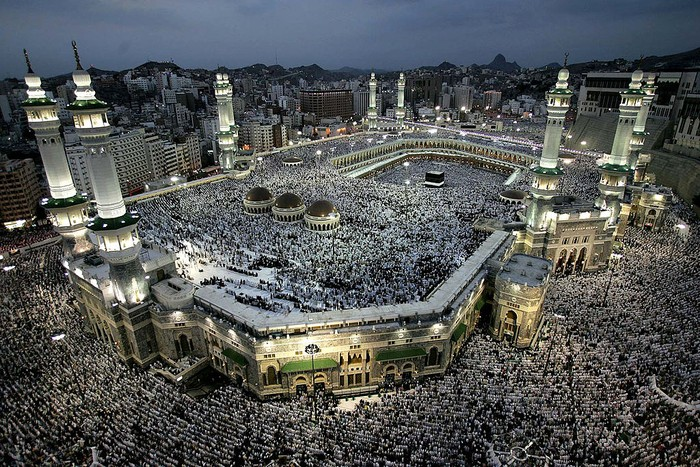

Masjidil Haram
Salah satu dari tiga tempat suci utama bagi umat Islam, selain Masjid Nabawi dan Masjidil Aqsa (Al-Quds).
Terletak di kota Mekah, wilayah kerajaan Saudi Arabia, yang saat ini (2024) dipimpin oleh Raja Salman bin Abdul
Aziz, dengan Putera Mahkotanya Pangeran Muhammad bin Salman. Tempat kelahiran Nabi paling mulia Rasululllah
Muhammad saw. Satu-satunya tempat umat Islam bertawaf, yaitu berputar mengelilingi Ka'bah, kiblat arah salat
seluruh kaum muslimin di dunia. Salat di masjidil Haram memiliki keutamaan 100.000 kali lipat daripada masjid
lainnya. Masjid ini erat hubungannya dengan Rukun Islam kelima, yaitu beribadah Haji, merefleksikan kisah Nabi
Ibrahim a.s. dan Nabi Ismail a.s.
Sejarah
Masjidil Haram menjadi salah satu tempat terpenting dalam sejarah umat Islam. Di dalammya terdapat Ka'bah,
yang
dikisahkan menjadi bangunan pertama di Bumi. Saat Nabi Ismail masih bayi, ditinggalkan oleh ayahnya, Nabi
Ibrahim
a.s. berdua dengan ibunya, Hajar. Nabi Ismail a.s. yang masih bayi menangis kehausan di tempat yang saat itu
sangat gersang, membuat Hajar sebagai ibu mencari air, bolak balik dari Bukit Shofa ke Bukit Mawrah sebanyak 7
kali, namun bukan dari kedua bukit tersebut tapi Allah swt mentakdirkan Jibril a.s. untuk memunculkan sumber
air
di dekat Nabi Ismail a.s. yang diberi nama Zamzam, yang sampai saat ini masih dikonsumsi umat muslim yang
berhaji
dan mengerjakan umroh.
Saat Nabi Ismail a.s. sudah dewasa, Nabi Ibrahim kembali mengunjungi Masjidil Haram, lalu keduanya
bersama-sama
meninggikan Ka’bah dari pondasinya, diperintahkan Allah swt untuk mengabarkan seluruh umat manusia mengerjakan
ibadah Haji. Keduanya lalu berdoa agar di akhir zaman nanti dilahirkan nabi penutup yang paling sempurna di
tempat
ini.
Doa tersebut dikabulkan oleh Allah swt, beberapa puluh generasi setelahnya di area Masjidil Haram ini
dilahirkan
nabi paling mulia sekaligus nabi penutup yaitu Muhammad saw, menjadi tempat berdakwah beliau pada fase awal
selama
13 tahun, sebelum kemudian berhijrah dan mendirikan wilayah kekuasaan sendiri di Yatsrib/Madinah. 10 tahun
kemudian setelah membangun peradaban Islam di Madinah, Nabi Muhammad saw menaklukkan kembali kota Mekah,
menghancurkan semua berhala yang ada di sana dan memurnikan kembali akidah tauhid kepada Allah swt.
Masjidil Haram Saat Ini
Sampai saat ini, Masjidil Haram adalah masjid paling utama umat Islam, selalu banyak umat yang bertawaf di
dalamnya, menjadi tempat utama ibadah Haji dan Umroh, salah satu destinasi seluruh umat Muslim di dunia.
Memiliki
luas 356.000 meter persegi. Area Masjidil Haram yang sekarang sangat sejuk, area pusat di sekitaran Ka’Bah
berlantaikan marme. Untuk bertawaf kini tersusun dalam bangunan beberapa lantai. Area Bukit Safa & Marwah pun
sudah dibangun sehingga jauh lebih nyaman. Sepanjang pelataran masjid disediakan kran dari mata air Zamzam
langsung. Hampir setiap selesai salat fardu diadakan salat jenasah. Pada musim Haji, semua jamaah akan
memenuhi
area masjid ini untuk melakukan rangkaian ibadah kepada Allah swt. Tercatat lebih dari 3,1 juta orang
menjalani
ibadah haji pada tahun 2012.
Imam Besar
Imam besar Masjidil Haram saat ini adalah Syekh Abdurrahman As-Sudais.